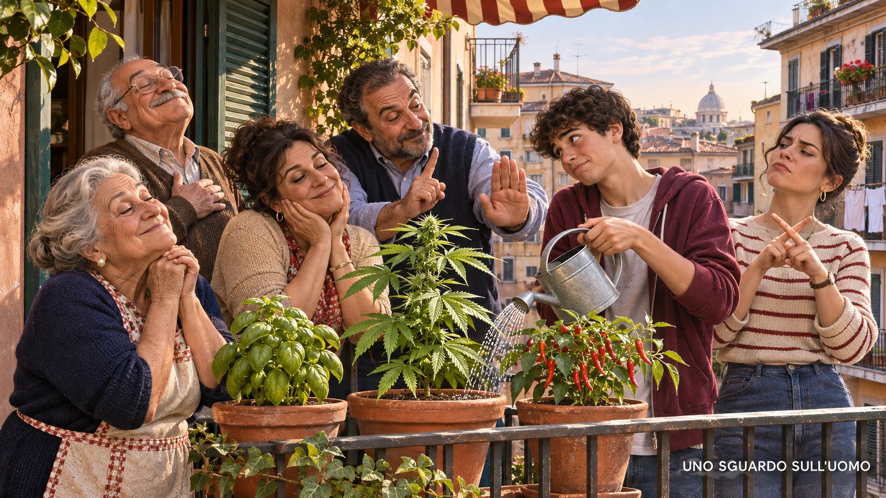

In questo dossier
- Venghino, signori, venghino
- Lo spettacolo come strumento del potere
- Il programma 2026 di AVS: tutto insieme, subito
- Coperture, patrimoni ed extraprofitti
- Produttività: il limite che non scompare
- L'isola felice ha sempre una produzione
- La cannabis come cerniera del Paese dei balocchi
- Che cosa propone realmente AVS
- Quattro piante: una cifra piccola soltanto sulla carta
- Il gettito immaginato e il mercato che resiste
- I Cannabis Social Club non sono immuni dal denaro
- Il minore escluso dal negozio ma non dal mercato
- Cinquanta metri non costruiscono una politica urbana
- Cannabis, hashish e potenza: evitare le leggende
- Amsterdam non è la libertà senza regole
- Guidare e lavorare: la legalizzazione non cancella la responsabilità
- Carcere e retroattività: ciò che lo slogan nasconde
- Sessantamila negozi e trecentocinquantamila posti: il numero che non regge
- L'alternativa: monopolio pubblico e filiera controllata
- Legalità, mafia e memoria storica
- Conclusione: Verdi in canna
- Fonti
Venghino, signori, venghino
Non basta elencare ciò che lo Stato dovrebbe garantire. Governare significa scegliere, rinunciare e spiegare chi paga. Il programma partecipativo presentato nel 2026 da Alleanza Verdi e Sinistra (AVS), pensato come base per il progetto politico del 2027, promette salari più alti, orari più brevi, un reddito di cittadinanza rafforzato fino alla prospettiva di un reddito universale, servizi gratuiti, transizione ecologica, nuove tutele sociali e cannabis legale. Ogni proposta, presa da sola, può rispondere a una domanda reale. Il problema nasce quando tutte vengono disposte sullo stesso banco, come se le risorse fossero indipendenti dalla produzione e ogni conflitto potesse essere risolto con una garanzia pubblica.
La tesi di questo dossier non è che AVS stia organizzando un complotto per stordire gli italiani. È più semplice e, proprio per questo, più politica: quando il consenso viene cercato sommando gratificazioni e rimuovendo il costo delle scelte, lo svago può diventare una forma di anestesia collettiva. Non serve attribuire intenzioni segrete. Basta osservare l'effetto di un'offerta pubblica che promette protezione, reddito, tempo libero e infine anche lo sballo legale, mentre produttività, debito, competitività e capacità amministrativa continuano a imporre limiti.
Il Paese dei balocchi non comincia con una canna. Comincia quando si promette che ogni desiderio possa diventare un diritto senza sacrifici, gerarchie e conseguenze.
Lo spettacolo come strumento del potere
Il potere non ha inventato il divertimento. Ha imparato a organizzarlo. Le Olimpiadi antiche erano prima di tutto una festa religiosa e civica, ma offrivano anche prestigio alle città e ai vincitori. A Roma il rapporto divenne più esplicito: i ludi erano finanziati dal tesoro pubblico e gestiti da magistrati che attraverso lo spettacolo costruivano consenso, visibilità e carriera. La formula di Giovenale, «panem et circenses», non descrive ogni forma di intrattenimento come manipolazione; denuncia una cittadinanza ridotta alla distribuzione di grano e allo spettacolo.
Anche i tornei medievali cambiarono funzione: da addestramento militare diventarono cerimonie di corte, occasioni di prestigio e rappresentazione gerarchica. Nell'età contemporanea il caso delle Olimpiadi di Berlino del 1936 dimostrò come una festa sportiva potesse essere trasformata in vetrina propagandistica di un regime. Epoche diverse, istituzioni diverse, finalità diverse. Il filo comune non è una cospirazione universale, ma la capacità del potere di catturare un piacere già esistente e usarlo per costruire appartenenza, distrarre dal conflitto o legittimare chi governa.
A Roma non c'erano soltanto i giochi gladiatori. Teatro, corse dei carri, feste religiose e distribuzioni pubbliche componevano un calendario capace di riunire la città e di renderla spettatrice della propria potenza. L'imperatore o il magistrato non chiedeva al pubblico di dimenticare per sempre fame, guerre e tasse; offriva un'esperienza collettiva nella quale l'ordine politico appariva generoso, inevitabile e magnifico. Il gladiatore combatteva, l'attore recitava, la folla sceglieva per qualche ora chi applaudire o fischiare. Il potere restava fuori dall'arena e, proprio per questo, poteva presentarsi come colui che aveva reso possibile lo spettacolo.
Le giostre medievali svolgevano una funzione analoga senza essere la stessa cosa. Mettevano in scena coraggio, appartenenza e rango. Il signore offriva la festa, il popolo partecipava, la gerarchia si mostrava come parte naturale del mondo. La modernità ha cambiato linguaggi e istituzioni, non ha eliminato il bisogno politico di costruire occasioni di gratificazione collettiva. La televisione, lo sport globale, le lotterie, i bonus e le piattaforme sociali possono diventare strumenti di consenso quando trasformano il cittadino da soggetto che domanda conto delle decisioni a pubblico che attende il prossimo evento.
Il paragone storico non sostiene che una proposta sulla cannabis equivalga a un combattimento tra gladiatori. Indica una funzione ricorrente: il divertimento assorbe attenzione e riduce la percezione del costo. Nei sistemi democratici questa funzione non viene imposta da un tiranno; nasce dall'incontro tra politici in cerca di consenso, media in cerca di pubblico e cittadini stanchi di sentirsi chiedere sacrifici. Proprio perché non esiste un regista unico, il meccanismo è più difficile da riconoscere e più facile da riprodurre.
Questa è la chiave di lettura, non una prova da inventare. Il programma di AVS va giudicato nel merito; tuttavia la sua architettura politica si comprende meglio se si riconosce un meccanismo antico: alla fatica della mediazione si sostituisce l'immagine di una comunità in cui lo Stato garantisce quasi tutto e il cittadino è invitato soprattutto a ricevere. Alla fine della carrellata compare la cannabis, non come dettaglio marginale ma come simbolo perfetto del progetto: la promessa di libertà personale inserita in un sistema che continua a dipendere da autorizzazioni, registri, controlli e finanziamento pubblico.
Il programma 2026 di AVS: tutto insieme, subito
Il percorso denominato «Il Vivaio» non è ancora una legge né un programma elettorale definitivo: è un processo partecipativo dal quale AVS intende ricavare il progetto per il 2027. Questa distinzione è importante, ma non rende irrilevanti le proposte. È proprio nella fase di elaborazione che una forza politica mostra la propria gerarchia di valori e il modo in cui pensa di risolvere le incompatibilità.
Nel lavoro AVS propone un salario minimo di almeno dieci euro, la riduzione dell'orario a parità di salario, l'indicizzazione di stipendi e pensioni, una maggiore flessibilità in uscita e il rafforzamento del reddito di cittadinanza nella direzione di un reddito di base universale. Sul piano sociale compaiono servizi gratuiti o fortemente sostenuti, più protezione, più diritti e un ruolo pubblico più esteso. Sull'energia si punta alle rinnovabili e si rifiuta il nucleare. Sull'immigrazione si rivendicano canali di ingresso sicuri e regolari. Sulla cannabis si propone una legalizzazione molto più ampia della sola vendita controllata.
Il punto non è negare il valore di ogni obiettivo. Aumenti salariali, sicurezza energetica, inclusione, tutela della salute e lotta alla criminalità sono problemi reali. Il punto è che governare obbliga a mettere gli obiettivi in ordine, a stabilire quali vengano prima e a dichiarare quali debbano attendere. Se si sostiene una produzione industriale in crisi, una parte delle risorse non sarà disponibile altrove. Se si accelera una trasformazione ambientale senza proteggere occupazione e filiere, il costo ricade sulle famiglie. Se si finanzia il reddito senza aumentare la base produttiva, si trasferisce ricchezza esistente senza crearne di nuova.
La parola che manca non è «diritto», ma «priorità». Un bilancio pubblico non può essere letto come un catalogo nel quale ogni pagina resta valida indipendentemente dalle altre. Ridurre l'orario a parità di salario può funzionare dove tecnologia e organizzazione permettono di produrre lo stesso valore in meno tempo; se viene imposto a un'attività che già produce poco, il costo unitario cresce oppure il servizio si riduce. Un reddito più generoso può evitare povertà e ricatti; se non è accompagnato da formazione, controlli e domanda di lavoro, può trasformarsi in una permanenza assistita. Prezzi calmierati possono proteggere in emergenza; se diventano regola, trasferiscono il costo sul contribuente, sul fornitore o sulla qualità.
Il programma tratta invece molte misure come parti naturalmente compatibili. Il cittadino riceve più reddito, lavora meno, paga meno servizi e viene protetto dalle oscillazioni del mercato. L'impresa finanzia salari, transizione, imposte e nuovi diritti. Lo Stato coordina, controlla, integra ciò che manca e copre le crisi. È un'immagine seducente perché ogni soggetto incontra la promessa prima di incontrarne il conto. Ma il conto esiste: può assumere la forma di tasse, debito, inflazione, minori investimenti, minore occupazione o riduzione dei servizi futuri.
La mediazione non è un tradimento del programma: è il momento in cui un programma diventa governo.
Coperture, patrimoni ed extraprofitti
AVS indica tra le leve una patrimoniale sulle grandi ricchezze, a partire da patrimoni superiori a cinque milioni di euro, e una tassazione al cento per cento degli extraprofitti. Sono formule politicamente efficaci perché identificano immediatamente chi dovrebbe pagare. Ma «extraprofitto» non è un oggetto naturale: richiede una base di confronto, una soglia, un periodo e regole capaci di distinguere una rendita occasionale dal risultato di investimenti, innovazione, riduzione dei costi o assunzione di rischio.
Una patrimoniale può essere disegnata in molti modi e non coincide automaticamente con l'esproprio. Tuttavia un prelievo ricorrente sul patrimonio e un'imposizione totale della quota definita eccedente producono incentivi. Il capitale finanziario, le strutture societarie e alcune attività ad alto margine sono mobili. Dire che le aziende possono trasferire sede, proprietà intellettuale, nuove controllate o futuri investimenti non significa sostenere che ogni impresa abbandonerà l'Italia. Significa riconoscere che le imprese capaci di muoversi confrontano ordinamenti diversi e che la politica fiscale modifica quella scelta.
Il problema emerge persino nelle società partecipate dallo Stato. Un gruppo come Eni opera già attraverso controllate estere e può diversificare geografie e investimenti. Cassa depositi e prestiti (CDP), a sua volta, si finanzia anche grazie al risparmio postale. Se la ricchezza accumulata viene trattata soltanto come una riserva da prelevare, si indebolisce il messaggio rivolto a famiglie e investitori: risparmiare, crescere e restare nel Paese deve continuare ad avere un senso. Una coppia di pensionati molto facoltosa non è prigioniera del territorio; neppure un imprenditore con pochi dipendenti e profitti elevati lo è.
Il mito di Robin Hood funziona quando il ricco coincide con il tiranno che sottrae arbitrariamente al povero. L'Italia contemporanea è una repubblica democratica: i privilegi ereditari non sono la base giuridica dell'ordinamento e il governo viene scelto attraverso il voto. La questione non è proteggere ogni ricchezza, ma distinguere la rendita parassitaria dalla capacità di produrre, investire e assumere. Se la politica confonde le due cose, punisce anche ciò che dovrebbe moltiplicare.
Un'impresa privata con pochi dipendenti e profitti elevati può essere esattamente il soggetto più mobile: software, consulenza, proprietà intellettuale, finanza, progettazione e commercio digitale non richiedono necessariamente grandi stabilimenti. Se il messaggio pubblico diventa «puoi crescere, ma oltre una soglia il risultato non sarà più tuo», la risposta non è sempre la chiusura immediata. Più spesso è il nuovo investimento realizzato altrove, la controllata aperta in un'altra giurisdizione, il brevetto trasferito, il dividendo distribuito prima o la vendita dell'impresa. L'impoverimento può avvenire senza una fotografia drammatica del cancello chiuso.
Lo stesso paradosso riguarda l'attrazione dei talenti. Si può offrire a un giovane un salario iniziale migliore, un affitto sostenibile e più servizi. Ma il giovane qualificato valuta anche che cosa accadrà se avrà successo: se potrà fondare un'impresa, accumulare capitale, trasmettere un patrimonio e reinvestire. Trattenere le menti non significa soltanto rendere meno doloroso l'ingresso nel mercato del lavoro; significa rendere credibile la possibilità di salire. Un Paese che promette protezione al punto di partenza ma diffida del traguardo rischia di formare competenze che altri sistemi trasformeranno in ricchezza.
Produttività: il limite che non scompare
Secondo l'Organizzazione per la cooperazione e lo sviluppo economico (OCSE), la produttività del lavoro italiana resta inferiore a quella di gran parte delle economie ad alto reddito e la crescita continua a essere debole. L'Istituto nazionale di statistica (Istat) ha stimato per il 2024 una diminuzione della produttività del lavoro dell'1,9 per cento; nel decennio 2014-2024 l'aumento medio annuo è stato circa lo 0,3 per cento, contro l'1,1 per cento dell'Unione europea a ventisette.
Produrre meno a parità di ore rende più difficile aumentare salari, ridurre l'orario e sostenere il welfare. La soluzione non è lavorare senza limiti, ma lavorare meglio nelle ore disponibili: tecnologia, organizzazione, formazione, capitale, infrastrutture, gestione e responsabilità. Una detassazione subordinata a investimenti che accrescano la produttività può essere più utile di un trasferimento indiscriminato. La scuola deve formare competenze; le risorse senior devono essere usate come valore e non considerate soltanto un costo; lo Stato deve migliorare le condizioni del lavoro senza immaginare di poter dettare ogni scelta all'impresa.
Qui si misura la distanza tra proclamare e governare. Una grande industria in crisi, un'acciaieria da decarbonizzare o un produttore di macchinari gravato dai debiti costringono a scegliere tra ambiente, lavoro, creditori, continuità produttiva e denaro pubblico. Chiudere un impianto risolve alla radice le sue emissioni, ma non risolve la vita delle famiglie. Sostenerlo tutela l'occupazione, ma può sottrarre risorse alla trasformazione ecologica. Non esiste una formula che salvi simultaneamente tutto. Esiste la responsabilità di decidere.
La vicenda dell'ex Ilva rende evidente questo conflitto. Ogni euro spostato dalla decarbonizzazione al sostegno immediato dell'impianto può essere criticato come rinvio ambientale; ogni euro lasciato esclusivamente alla trasformazione futura può risultare inutile se nel frattempo la produzione cessa, l'indotto collassa e le famiglie perdono reddito. Difendere il lavoro non significa negare l'inquinamento. Difendere l'ambiente non significa ignorare gli operai. Significa ammettere che due beni legittimi competono per le stesse risorse e che la scelta lascerà comunque qualcuno insoddisfatto.
Anche un'azienda di trattori con decine di milioni di debiti e un fatturato di poco superiore non si salva proclamando un diritto universale al reddito. Occorre capire se gli ordini esistono, se il prodotto è competitivo, se il debito può essere ristrutturato, se un investitore crede nel piano e se lo Stato è disposto ad accompagnare la transizione senza nazionalizzare ogni perdita. Il gesto pubblico può essere indiretto: sostenere la classe operaia, garantire formazione, accelerare autorizzazioni, partecipare a un progetto industriale verificabile. Questo è stare al fianco degli investitori senza consegnare loro un assegno in bianco.
L'isola felice ha sempre una produzione
Il mondo promesso può essere immaginato come una grande comune: tutti producono in allegria, una volta alla settimana vendono al resto del mondo ciò che avanza e con il ricavato comprano semi, energia e beni non disponibili. È una fantasia utile perché rende visibile ciò che il denaro spesso nasconde. Anche eliminando la moneta e tornando al baratto, qualcuno deve decidere quanto grano vale un macchinario, chi lavora quando il raccolto va salvato e come distribuire un bene scarso. La moneta non crea il conflitto tra bisogni; lo misura in modo imperfetto.
I reality offrono una miniatura artificiale di questo problema. Nel Grande Fratello i concorrenti dispongono di casa, piscina, palestra, cibo e tempo, ma quei beni esistono perché una produzione esterna li finanzia e stabilisce regole, prove, premi e penalità. La libertà dentro la casa dipende da un potere che resta fuori campo. Quando le risorse diminuiscono, emergono leadership, alleanze, esclusioni e privilegi. Non è una dimostrazione scientifica sull'intera società; è un'immagine immediata del fatto che l'uguaglianza del punto di partenza non cancella caratteri, ambizioni e gerarchie.
Se si alza improvvisamente il tenore di vita di chi non ha imparato a gestirlo, il benessere gratuito può essere percepito come diritto naturale. Se si abbassa quello di chi lo ha costruito con sacrifici personali e familiari, la perdita viene percepita come punizione. In entrambi i casi nasce risentimento. Il capo che organizza la comunità assume responsabilità e ottiene vantaggi: informazioni, potere di scelta, accesso prioritario. Quei vantaggi possono diventare una casta. Il tentativo di abolire ogni differenza ricrea quindi differenze meno trasparenti e più difficili da contestare.
La cannabis come cerniera del Paese dei balocchi
Dentro questa architettura la proposta sulla cannabis non è un'aggiunta folkloristica. È la cerniera tra libertà individuale, promessa economica e spettacolo politico. AVS presenta la legalizzazione come una misura capace insieme di sottrarre denaro alle mafie, creare occupazione, generare entrate fiscali, ridurre i danni, liberare risorse giudiziarie e riconoscere un diritto personale. Se tutte queste conseguenze si verificassero nello stesso tempo e senza costi significativi, la mediazione diventerebbe quasi superflua.
La posizione di questo dossier non è proibizionista. Una vendita legale e controllata può offrire vantaggi concreti: verifica del contenuto di tetraidrocannabinolo (THC) e cannabidiolo (CBD), analisi dei contaminanti, tracciabilità, etichettatura, limiti di età e riduzione della necessità di incontrare spacciatori in luoghi insicuri. Proprio perché questi vantaggi sono seri, la legalizzazione deve essere costruita come un sistema di controllo e non come una moltiplicazione simultanea di coltivazioni domestiche, club, punti vendita e circuiti privati.
Che cosa propone realmente AVS
La proposta approvata nel percorso 2026 prevede la possibilità di coltivare fino a quattro piante in casa, la costituzione di Cannabis Social Club senza scopo di lucro, punti vendita autorizzati, tracciabilità del prodotto, tassazione sufficientemente bassa da competere con gli spacciatori, cancellazione di sanzioni e precedenti relativi all'uso personale e un gettito stimato tra tre e sette miliardi di euro. Chiede inoltre di cancellare il divieto sulla cosiddetta cannabis light.
Il testo tecnico da cui il progetto deriva era ancora più articolato: da quattro a sei piante femmina per adulto, con un massimo di tre coltivatori nello stesso domicilio; quantità detenibili fuori e dentro casa; registri, tracciabilità e comunicazioni prefettizie per i club; una filiera commerciale con codici di attività distinti; certificazione antimafia; etichette con THC e CBD; indicazioni fiscali; riconoscimenti territoriali; distanza minima di cinquanta metri da scuole e parchi. La sintesi finale ha ridotto a quattro il numero delle piante, ma non risolve con chiarezza tutte le ambiguità sulla dimensione del nucleo domestico.
È importante non attribuire al testo ciò che non dice. AVS non promette esplicitamente centocinquantamila coffee shop e non autorizza la vendita del raccolto domestico. Ma mette insieme tre canali — autoproduzione, associazioni e mercato autorizzato — che rispondono a logiche diverse. Più si espande la produzione fuori dal commercio tassato, più si restringe la base del gettito; più si facilita l'accesso, più diventa difficile sostenere che il consumo non venga incoraggiato; più si moltiplicano i soggetti autorizzati, più cresce il costo del controllo.
La forza retorica della proposta nasce proprio dalla sovrapposizione. A chi considera la cannabis una libertà individuale viene offerta l'autoproduzione. A chi preferisce una dimensione comunitaria vengono offerti i club. A chi pensa all'economia vengono promessi negozi, occupazione e imposte. A chi teme la criminalità viene promessa la tracciabilità. A chi guarda alla salute vengono offerte etichette e limiti. Ciascun pubblico può riconoscere il proprio argomento senza essere costretto a misurarlo con gli altri.
Una legge, invece, deve decidere quale canale prevalga quando entrano in conflitto. Se il negozio deve finanziare controlli e gettito, non può essere contemporaneamente svuotato dall'autoproduzione e dai club. Se il club è davvero non commerciale, deve avere limiti abbastanza stringenti da non trasformarsi in un negozio riservato ai soci. Se la coltivazione domestica è una libertà intima, il controllo pubblico non può entrare in ogni abitazione. Ogni apertura riduce la capacità di sorveglianza; ogni controllo riduce la libertà promessa.
Quattro piante: una cifra piccola soltanto sulla carta
Quattro piante possono sembrare poche. Moltiplicate per gli adulti di una casa diventano un'altra cosa. Nel testo tecnico, tre coltivatori avrebbero potuto arrivare a dodici piante nella versione da quattro, o a diciotto nella versione da sei. Non è necessario trasformare l'esempio in una disputa condominiale per vedere il problema: la legge deve definire chi coltiva, dove, con quali responsabilità, con quali controlli e con quale separazione tra raccolti personali e attività organizzate.
Non tutti coltiveranno. La cannabis di qualità stabile non nasce semplicemente mettendo un seme sul balcone. Clima, ciclo luminoso, umidità, ventilazione, odori, parassiti e conservazione incidono sul risultato. La coltivazione indoor può richiedere illuminazione ad alta intensità — sodio ad alta pressione, alogenuri metallici ceramici o LED — oltre a ventilazione e controllo ambientale. I pannelli fotovoltaici possono compensare una parte dei consumi, ma non rendono automaticamente neutra una serra domestica. Proprio la complessità farà sì che molti consumatori continuino a comprare, mentre una minoranza più attrezzata potrà produrre tutto l'anno.
Il prodotto domestico non sarebbe destinato legalmente alla vendita e non avrebbe le certificazioni di quello commerciale. Accade già con il vino fatto in casa: l'esistenza di una produzione privata non la trasforma in merce autorizzata. Ma la cannabis aggiunge un problema investigativo. Foglie, infiorescenze, resine e derivati possono circolare in quantità ridotte; distinguere un regalo, una condivisione, una cessione e una vendita richiede prove. Se la materia prima domestica è lecita, il confine con la distribuzione illecita non sparisce: diventa più difficile da osservare.
Immaginiamo un condominio di dieci famiglie con un giardino interno. La legge dovrebbe chiarire se le piante debbano restare negli appartamenti, se possano essere collocate in una parte comune, chi risponda dell'accesso dei minori, degli odori, della sicurezza e dell'eventuale sottrazione. L'amministratore non potrà semplicemente assegnare quote di raccolto alla signora Maria in proporzione ai millesimi. La scena fa ridere, ma il diritto condominiale nasce proprio perché proprietà privata e spazi condivisi producono conflitti molto meno esotici di una piantagione comune.
Il controllo numerico è ancora più difficile. La pianta non porta un contrassegno naturale e cambia durante il ciclo. Un sopralluogo può contare quattro esemplari oggi e non sapere quanti raccolti siano stati prodotti nell'anno, quante talee siano state cedute o quanta sostanza secca sia conservata altrove. Per controllare realmente ogni coltivatore servirebbe un'invasività incompatibile con la promessa di liberalizzazione. Per non invadere la casa occorre accettare una quota di inosservabilità. È questo, non il numero astratto delle piante, il punto debole dell'autoproduzione.
L'autoproduzione non elimina l'illegalità. Le offre una zona grigia in cui il prodotto può essere legale all'origine e illecito nella destinazione.
Il gettito immaginato e il mercato che resiste
La stima di tre-sette miliardi di entrate viene presentata come beneficio della legalizzazione, ma non è una copertura certa. Il gettito dipende da prezzo, aliquota, numero di clienti, quota di mercato legale, autoconsumo, club, costi di controllo e comportamento dell'offerta illegale. Una tassa alta aumenta l'entrata per unità ma rende lo spacciatore più competitivo. Una tassa bassa aiuta il mercato legale ma riduce l'incasso. Un accesso molto facile può espandere i consumi, entrando in tensione con la tutela della salute.
L'esperienza canadese mostra che la legalizzazione non rende automaticamente il prodotto legale più economico. Nel 2019 il prezzo medio dichiarato era circa 10,29 dollari canadesi al grammo nel mercato legale e 5,96 in quello illegale; nel 2022 la distanza si era ridotta, ma il legale restava più caro: circa 6,12 contro 4,62. Nel 2023 la quota legale della spesa familiare era cresciuta fino a circa il 73 per cento, risultato significativo ma non equivalente alla scomparsa del mercato clandestino. Prezzo, disponibilità e qualità percepita continuavano a orientare le scelte.
Il vantaggio immediato per l'adulto rispettoso della legge sarebbe soprattutto un altro: non doversi recare di notte in un parco buio, conoscere la composizione del prodotto e avere un venditore responsabile. È un vantaggio reale. Ma non basta per garantire che lo spacciatore perda la clientela minorenne, quella che cerca prodotti più forti, quella che vuole evitare registrazioni o quella che trova il prezzo illegale più conveniente.
I Cannabis Social Club non sono immuni dal denaro
L'assenza di scopo di lucro non elimina costi, fornitori, locali, personale, servizi e posizioni di potere. Un'associazione può essere corretta oppure diventare un involucro per prestanome, cessioni simulate, gonfiamento dei costi e gestione opaca. La proposta prevede registri e tracciabilità; nella filiera commerciale richiama anche la certificazione antimafia. Tuttavia il numero dei controlli necessari cresce insieme al numero dei club e la qualità dei controlli dipende da amministrazioni, prefetture, forze di polizia e laboratori già impegnati su altri fronti.
La criminalità organizzata non ha bisogno che un'attività sia illegale per guadagnarci. Da decenni investe in edilizia, ristorazione, logistica, gioco, rifiuti, energia e imprese formalmente lecite. Legalizzare modifica il perimetro nel quale agisce: può sottrarle una parte del traffico, ma può anche offrirle imprese da finanziare, forniture da condizionare e ricavi da riciclare. La legalità formale è una condizione necessaria, non un disinfettante.
Il registro dei soci può limitare l'accesso occasionale, ma crea anche dati sensibili da proteggere. La tracciabilità può ricostruire il percorso di un lotto, ma richiede pesatura, software, verifiche e sanzioni. Il divieto di profitto può impedire la distribuzione di utili, non impedisce stipendi sproporzionati, consulenze, affitti pagati a soggetti collegati o forniture sovrapprezzate. Ogni presidio è possibile; nessuno è gratuito. Se i club diventano numerosi, lo Stato dovrà scegliere se controllarli superficialmente o costruire una nuova macchina amministrativa.
Il minore escluso dal negozio ma non dal mercato
Non è corretto affermare che la maggioranza dei consumatori sia minorenne. I dati europei mostrano che la cannabis è soprattutto diffusa tra adulti giovani; in Italia, però, l'uso tra studenti non è marginale. Nel 2024 circa il 21 per cento degli studenti tra quindici e diciannove anni dichiarava un consumo di cannabis nell'ultimo anno, il 13 per cento nell'ultimo mese e il 2,7 per cento un uso frequente. Nel 2025 la cannabis restava la sostanza illegale più utilizzata dagli studenti.
Il minore non potrà entrare legalmente nel punto vendita. Continuerà quindi a dipendere da uno spacciatore, da un adulto compiacente, da un fratello maggiore o da prodotto sottratto in casa. La pianta non si rolla da sola e un bambino non va normalmente a mangiarne le foglie: la questione non è una caricatura del pericolo domestico. La questione è la normalizzazione. Se nonno, nonna, genitori, zii e fratelli maggiori coltivano e consumano legalmente, il sedicenne riceve un messaggio ambiguo: «Tu non puoi fumare, sei minorenne; intanto hai annaffiato le piante?».
È una scena satirica, non la descrizione di ogni famiglia. Ma rende visibile un conflitto che la legge non risolve con un cartello vietato ai minori. Anche l'alcol è vietato ai minori e può essere autoprodotto; ciò non impedisce dipendenze, accessi informali e costi sanitari. Lo Stato autorizza inoltre il gioco d'azzardo e trasmette sulla televisione pubblica programmi costruiti sull'attesa di un premio casuale. La coerenza non consiste nel vietare ogni rischio, ma nel non presentare come puro progresso ciò che genera anche nuovi costi sociali.
La famiglia non perde autorevolezza perché un adulto fuma cannabis. La perde quando pretende di insegnare un limite che ogni gesto quotidiano presenta come ridicolo. «Tu non puoi, sei minorenne» è una regola comprensibile; diventa fragile se il prodotto è coltivato come il basilico, esibito agli ospiti e trasformato nel centro della festa di Capodanno. Il sedicenne non ragiona come un ufficio legislativo: vede adulti autorizzati, un divieto legato all'età e una sostanza disponibile a pochi metri dalla sua stanza.
La stessa contraddizione esiste già con birra, vino e sigarette. La legalizzazione non inventa il desiderio né la trasgressione. Ma l'autoproduzione aggiunge prossimità e disponibilità. Per questo il confronto corretto non è tra un mondo puro e un mondo improvvisamente drogato; è tra due sistemi imperfetti. Oggi la sostanza esiste, viene nascosta, venduta illegalmente e consumata anche prima di guidare. Domani una parte sarebbe legale, visibile e più controllata, ma la separazione tra adulto e minore, uso e cessione, casa e mercato diventerebbe più porosa.
Cinquanta metri non costruiscono una politica urbana
La distanza minima di cinquanta metri da scuole e parchi, contenuta nella proposta tecnica, non significa che qualcuno volesse aprire un negozio in classe. Significa che la barriera prevista è minima: cinquanta metri si percorrono in meno di un minuto. Un punto vendita potrebbe essere lontano dalla scuola e vicinissimo a un fast food, a una sala giochi o a una piazza frequentata dagli stessi ragazzi.
Nel testo non emerge una disciplina nazionale completa sulla densità per abitanti o sulla distanza tra esercizi. Senza pianificazione comunale, una via potrebbe concentrare più attività e assumere una reputazione capace di modificare affitti, frequentazione e commercio circostante. Amsterdam insegna proprio questo: la regolazione non riguarda soltanto il prodotto, ma anche il numero degli esercizi, i quartieri, il turismo, il disturbo e la decisione politica dei comuni.
Cannabis, hashish e potenza: evitare le leggende
Marijuana e hashish non sono sostanze senza rapporto tra loro. Entrambe derivano dalla cannabis: la prima indica soprattutto infiorescenze essiccate, il secondo la resina lavorata. Gli effetti non possono essere divisi semplicemente tra hashish allegro e marijuana allucinogena. Dipendono da concentrazione di THC e CBD, dose, modalità di assunzione, esperienza, condizioni psicologiche, altre sostanze e vulnerabilità individuale. Prodotti ad alta potenza possono provocare ansia, panico, vomito, alterazioni percettive e, in soggetti predisposti, conseguenze psichiatriche più serie.
È qui che il mercato legale ha il suo argomento migliore: fissare parametri, misurare la potenza, controllare pesticidi e muffe, imporre etichette e informare. L'Osservatorio europeo delle droghe e delle tossicodipendenze segnala che l'aumento della potenza e la varietà dei prodotti complicano la valutazione dei rischi; la cannabis rappresentava nel 2024 circa un terzo degli ingressi in trattamento per droga in Europa. Legalizzare non rende innocua una sostanza; permette, se il modello è rigoroso, di governarne una parte dei rischi.
Amsterdam non è la libertà senza regole
I Paesi Bassi non hanno costruito un mercato completamente libero. La vendita nei coffee shop è tollerata entro criteri severi, mentre per decenni produzione e approvvigionamento sono rimasti illegali: il celebre problema della «porta sul retro». I comuni decidono se ammettere gli esercizi e quanti; valgono divieti per minori, pubblicità, grandi quantità e disturbo. La vendita individuale è limitata. Proprio per correggere la contraddizione della filiera, il governo olandese ha avviato un esperimento di approvvigionamento regolato in un gruppo di comuni.
Anni di turismo legato a cannabis e quartieri a luci rosse non hanno condotto l'Olanda al modello massimamente permissivo immaginato da AVS. Hanno prodotto restrizioni, gestione locale e sperimentazioni graduali. Neppure esiste una legalizzazione europea uniforme. Nel 2026 alcuni Paesi — tra cui Germania, Malta, Lussemburgo e Repubblica Ceca — consentono forme limitate di coltivazione domestica; Germania e Malta prevedono associazioni non commerciali; altri mantengono divieti o semplici depenalizzazioni. L'Unione europea non ha imposto un'unica apertura.
Il confronto americano sarebbe meno utile: gli Stati federati hanno discipline molto diverse, inserite in una cultura istituzionale, sanitaria e commerciale non sovrapponibile a quella italiana. Amsterdam resta un paragone più vicino proprio perché dimostra che la tolleranza non coincide con l'assenza di confini.
Guidare e lavorare: la legalizzazione non cancella la responsabilità
La legalizzazione del consumo non autorizzerebbe la guida pericolosa. La legge italiana del 2024 aveva modificato l'articolo 187 del Codice della strada, collegando il reato alla guida dopo l'assunzione di sostanze. Nell'ottobre 2026 la Corte costituzionale ha precisato che devono essere accertati una prossimità temporale e un'assunzione quantitativamente idonea a determinare alterazione e pericolo. La distinzione tra traccia biologica e reale capacità di compromettere la guida resta quindi centrale.
Lo stesso vale sul lavoro. Mansioni sensibili, macchinari, trasporti e sicurezza richiedono regole specifiche. Il punto non è punire una condotta privata priva di effetti, ma impedire che il diritto al consumo venga confuso con il diritto a svolgere qualsiasi attività in condizioni incompatibili con la sicurezza altrui.
Carcere e retroattività: ciò che lo slogan nasconde
In Italia il possesso per uso esclusivamente personale è disciplinato dall'articolo 75 del decreto del Presidente della Repubblica n. 309 del 1990 con sanzioni amministrative; non è di per sé un reato punito con il carcere e non produce un precedente penale. I dati sui detenuti per violazione della legge sulle droghe comprendono invece produzione, traffico, detenzione finalizzata alla cessione, associazione e sostanze diverse dalla cannabis. Presentarli come persone incarcerate semplicemente perché hanno fumato una canna è propaganda.
Anche la cancellazione retroattiva va descritta con precisione. Domani una persona potrebbe coltivare entro i limiti o acquistare da un canale autorizzato. Ieri la stessa sostanza poteva provenire da produzione clandestina o da uno spacciatore. Le due situazioni non sono identiche, perché cambiano origine, filiera e consapevolezza dell'illiceità. Il legislatore può rivalutare il disvalore di condotte passate, ma non deve fingere che siano già avvenute dentro il futuro sistema regolato.
Sessantamila negozi e trecentocinquantamila posti: il numero che non regge
La proposta tecnica riprende la previsione di 350.000 nuovi posti di lavoro. Una verifica di Pagella Politica ha ricostruito uno degli errori alla base di quella stima: un rapporto olandese di circa 1.250 consumatori per coffee shop era stato letto come 125. Da quell'errore derivavano circa 60.000 esercizi e 300.000 addetti al dettaglio; correggendo lo zero, gli esercizi scendevano a circa 6.000 e gli addetti a circa 30.000. La cifra complessiva diventava quindi implausibile.
AVS non dichiara nella sintesi finale che apriranno sessantamila coffee shop, ma continua a presentare grandi numeri occupazionali e fiscali senza sciogliere le tensioni del modello. Un settore può creare lavoro; non ogni euro speso nel settore è ricchezza aggiuntiva, perché una parte viene sottratta ad altri consumi. La fame chimica potrà perfino aiutare pizzerie e alimentari, ma non è una politica industriale.
L'alternativa: monopolio pubblico e filiera controllata
Se l'obiettivo prioritario fosse sottrarre spazio all'illecito, controllare la potenza e proteggere la salute, il modello più coerente sarebbe molto più sobrio: produttori autorizzati, acquisto centralizzato, vendita attraverso una rete pubblica o sottoposta a un monopolio statale, niente autoproduzione e niente concorrenza promozionale. Non servono necessariamente farmacie. Servono punti riconoscibili, personale formato, assortimento limitato, tracciabilità completa e prezzi calibrati per competere con l'illegale senza incentivare il consumo.
Il Québec offre un riferimento concreto. La Société québécoise du cannabis (SQDC), società pubblica senza scopo di lucro, è il compratore e venditore esclusivo per il mercato ricreativo provinciale. Il suo mandato mette la salute pubblica davanti alla massimizzazione del profitto; controlla prodotti, prezzi, punti vendita e marketing. Il sistema non elimina ogni commercio illegale e non è automaticamente trasferibile in Italia, ma rende lo Stato responsabile dell'intera cerniera tra produzione e consumo.
Un monopolio pubblico rinuncia a una parte della retorica libertaria, ma rende verificabile la promessa politica. Se il prodotto è pericoloso abbastanza da richiedere limiti, lo Stato non può trattarlo come un'occasione commerciale qualsiasi. Se è innocuo abbastanza da essere coltivato ovunque, allora le stime di gettito e controllo perdono credibilità. AVS tenta di conservare entrambe le narrazioni: libertà diffusa e regolazione rigorosa, autoproduzione e grandi entrate fiscali, club non profit e mercato ampio.
Lo Stato potrebbe acquistare soltanto da produttori autorizzati, imporre cultivar e soglie di potenza, far analizzare ogni lotto e distribuire attraverso punti privi di insegne promozionali. Potrebbe modificare prezzo e assortimento sulla base dei dati sanitari e del mercato clandestino. Potrebbe limitare prodotti ad altissima concentrazione, confezioni attraenti per i giovani e tecniche commerciali basate sull'impulso. Soprattutto, conoscerebbe la quantità realmente venduta e potrebbe confrontarla con sequestri, ricoveri e domanda di trattamento.
Il monopolio non è una bacchetta magica. Può diventare inefficiente, offrire orari scomodi, fissare prezzi sbagliati e spingere clienti verso l'illegale. Richiede controllori indipendenti e obiettivi pubblici misurabili. Ma concentra la responsabilità: se il sistema fallisce, non si può attribuire la colpa a migliaia di balconi, associazioni e negozi. È proprio questa responsabilità concentrata che una politica seria dovrebbe preferire quando decide di legalizzare una sostanza psicoattiva.
Legalità, mafia e memoria storica
La mafia siciliana non nacque con la Repubblica. Durante il fascismo la campagna del prefetto Cesare Mori colpì duramente cosche, reti e fiancheggiatori; non le eliminò. Lo Stato autoritario usò metodi repressivi eccezionali e dichiarò una vittoria più completa di quella realmente ottenuta. Dopo lo sbarco alleato alcuni mafiosi o personaggi sostenuti da reti mafiose ricevettero incarichi e legittimazione locale; nel dopoguerra Cosa Nostra acquistò un potere politico, economico e militare enormemente superiore, fino alla stagione stragista di Totò Riina.
Oggi la minore visibilità militare non equivale alla scomparsa. Le relazioni della Direzione investigativa antimafia (DIA) descrivono organizzazioni capaci di infiltrare l'economia legale, usare professionisti e prestanome, spostare capitali e adattarsi ai settori in crescita. Per questo la legalizzazione può ridurre una rendita criminale soltanto se il mercato legale è più conveniente, controllato e impermeabile. Moltiplicare soggetti, coltivazioni e passaggi senza moltiplicare la capacità investigativa rischia di spostare il problema, non di risolverlo.

Conclusione: Verdi in canna
La sinistra rappresentata da AVS tende a dividere il mondo economico in due campi morali: chi possiede deve giustificarsi, chi riceve viene descritto come creditore della società. Non è la rivincita sui secoli nei quali nobili e monarchie godevano di privilegi giuridici. Quella frattura è stata recisa dalla Repubblica, dalla cittadinanza e dal voto democratico. Il conflitto contemporaneo riguarda un'altra cosa: decidere se la ricchezza debba essere combattuta in quanto tale oppure moltiplicata, regolata e resa accessibile attraverso lavoro, formazione, concorrenza e produttività.
Il riscatto della mediocrità non è il riscatto dei poveri. La povertà non è mediocrità e la ricchezza non è virtù. Mediocre è la cultura che rifiuta responsabilità, competenza e conseguenze, che misura la politica con il reel più visto, che considera meritevole chi ha rubato di meno invece di chiedere chi abbia costruito di più. Persino il debito pubblico viene talvolta trasformato in prova di generosità, come se non fosse una promessa di tasse future fatta da chi spende oggi.
I social non hanno creato questa cultura, ma le hanno dato una voce continua e una metrica. Una frase viene giudicata dal numero di visualizzazioni prima che dalla sua verità; una politica complessa perde contro un video che identifica in pochi secondi un colpevole e una soluzione. Chi prova a spiegare che non si può avere tutto appare debole. Chi assicura che basterà tassare qualcun altro appare coraggioso. La mediocrità diventa forza politica quando la rinuncia a capire viene scambiata per autenticità popolare.
In questo ambiente vince spesso chi riesce a dimostrare di aver sottratto meno degli avversari, non chi ha prodotto risultati migliori. L'assenza di scandalo sostituisce la capacità di governo; il debito accumulato può perfino essere rivendicato come prova di aver distribuito qualcosa. Ma il debito non è un regalo della politica: è una quota del futuro già impegnata. Se i benefici sono immediati e il costo arriverà dopo, il meccanismo dello spettacolo è completo.
Una forza politica in difficoltà può cercare di incorporare questa energia: promettere reddito, tempo, servizi, prezzi calmierati e protezione; indicare un ricco abbastanza lontano da pagare; presentare ogni limite come cattiveria; aggiungere infine la libertà di coltivare e consumare cannabis. Non occorre immaginare un piano per trasformare tutti in sballati. È sufficiente osservare l'anestesia politica prodotta da una promessa senza gerarchie: mentre si discute di quattro piante e club sociali, restano sullo sfondo produttività, investimenti, debito, industria, scuola e capacità dello Stato.
Il mondo di AVS non funzionerebbe neppure come una grande comune su un'isola. Qualcuno dovrebbe decidere cosa produrre, come distribuirlo, quando venderlo al resto del mondo e come usare il denaro per comprare ciò che manca. Quel qualcuno assumerebbe responsabilità e riceverebbe potere; dal potere nascerebbero privilegi e, col tempo, nuove caste. Anche i reality mostrano involontariamente la stessa verità: piscina, palestra e beni forniti dalla produzione non cancellano conflitti, gerarchie e leadership. L'abbondanza gratuita non rende automaticamente migliori; cambia soltanto il terreno sul quale si compete.
La legalizzazione può essere discussa seriamente. Un mercato statale, ristretto e controllato potrebbe ridurre i rischi, sottrarre clienti agli spacciatori e offrire prodotti verificati. L'autoproduzione diffusa, i club, la vendita privata, le stime miliardarie e la cancellazione retorica dei confini tra ieri e domani compongono invece una promessa troppo perfetta. Non è una politica che sceglie: è una politica che accumula.
Accumulare promesse permette di rinviare il momento della verifica. Se le entrate fiscali saranno inferiori, si potrà accusare il mercato illegale. Se i club saranno pochi, si potrà accusare la burocrazia. Se saranno troppi, si potrà chiedere più controllo. Se l'autoproduzione ridurrà le vendite, verrà celebrata come libertà; se non le ridurrà, le imposte verranno celebrate come gettito. Ogni esito potrà essere raccontato come una conferma, perché gli obiettivi sono numerosi e in parte incompatibili.
Venghino, signori, venghino. Il Paese dei balocchi sta aprendo.
Domani tutti avranno il pollice verde e potranno commuoversi sul balcone quando da un piccolo seme nascerà una piantina, al fianco del basilico e dei peperoncini. Il mercato illegale, però, non sparirà per decreto; i minori non entreranno nei negozi; le imprese continueranno a confrontare Paesi diversi; le coperture dipenderanno da una ricchezza che prima deve essere prodotta.
Ma almeno il balcone sarà rigoglioso.
E mentre l'Italia perde competitività, capitale e capacità di scegliere, saremo finalmente tutti verdi in canna.
FONTI
Le fonti sono riportate per consentire il controllo dei dati e delle ricostruzioni. Nel corpo del dossier non sono inseriti richiami numerici: i documenti sostengono i fatti verificabili, non sostituiscono l'analisi editoriale.
- Alleanza Verdi e Sinistra, Il Vivaio – percorso partecipativo per il programma 2027, 2026.
- Alleanza Verdi e Sinistra, Legalizzazione della cannabis: quattro piante in casa, Cannabis Social Club e vendita autorizzata, proposta approvata nel percorso Il Vivaio, 2026.
- Alleanza Verdi e Sinistra, proposta tecnica per la regolamentazione della cannabis, 2026.
- Alleanza Verdi e Sinistra, Lavoro buono e ben pagato; Quel che è giusto è giusto; Energia pulita e popolare; Umani, prima di tutto; Devo sapere, 2026.
- Organizzazione per la cooperazione e lo sviluppo economico, OECD Economic Surveys: Italy 2026, 2026.
- Istituto nazionale di statistica, Misure di produttività – Anni 1995-2024, 12 dicembre 2025.
- International Olympic Committee, The Ancient Olympic Games, consultato nel 2026.
- The Metropolitan Museum of Art, Theater and Amphitheater in the Roman World, ottobre 2006.
- Giovenale, Satira X, versi 77-81.
- The Metropolitan Museum of Art, Arms and Armor—Common Misconceptions and Frequently Asked Questions, 1991.
- United States Holocaust Memorial Museum, The Nazi Olympics Berlin 1936, consultato nel 2026.
- Pagella Politica, La stima dei 350 mila posti di lavoro con la cannabis legale non regge, 17 marzo 2021.
- European Union Drugs Agency, European Drug Report 2026: Cannabis, 2026.
- Presidenza del Consiglio dei ministri, Relazione annuale al Parlamento sul fenomeno delle tossicodipendenze in Italia 2025, 2025.
- Istituto superiore di sanità, dati ESPAD Italia sul consumo di sostanze tra gli studenti, 2026.
- Health Canada, Legislative Review of the Cannabis Act: Final Report of the Expert Panel, 2024.
- Statistics Canada, Canadian Cannabis Survey e dati sui prezzi del mercato legale e illegale, 2019-2023.
- Gouvernement du Québec, Cannabis Regulation Act e mandato della Société québécoise du cannabis, testi vigenti consultati nel 2026.
- Institut national de santé publique du Québec, analisi del modello pubblico di distribuzione della cannabis, consultata nel 2026.
- Government of the Netherlands, Toleration policy regarding soft drugs and coffee shops, consultato nel 2026.
- Government of the Netherlands, Controlled Cannabis Supply Chain Experiment, consultato nel 2026.
- Corte costituzionale, sentenza n. 10 del 2026, 29 ottobre 2026.
- Decreto del Presidente della Repubblica 9 ottobre 1990, n. 309, articolo 75.
- Direzione investigativa antimafia, Relazioni semestrali 2024-2025.
- Istituto della Enciclopedia Italiana Treccani, voce Cesare Mori, consultata nel 2026.
- Journal of Cannabis Research, The environmental impact of indoor cannabis production, 2021.
Criterio editoriale
Il dossier distingue le proposte approvate nel percorso partecipativo di AVS dai testi tecnici richiamati, i dati verificabili dalle valutazioni editoriali e la legalizzazione della vendita dall'autoproduzione domestica. Le conseguenze economiche e sociali sono presentate come analisi, non come intenzioni segrete attribuite ai promotori.